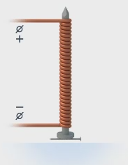
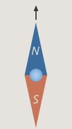
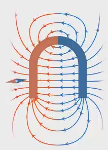
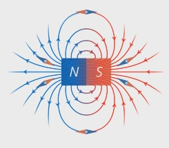
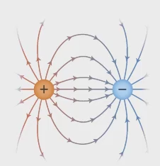
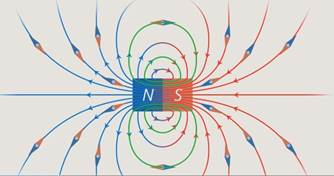

Каждый из вас держал в руках магнит и знает его удивительное свойство: он на расстоянии взаимодействует с другим магнитом или с куском железа. Что есть такого в магните, что придает ему эти удивительные свойства? Можно ли самому сделать магнит? Можно, и что для этого нужно – вы узнаете из нашего урока. Забежим наперед: если взять простой железный гвоздь, он не будет обладать магнитными свойствами, но, если обмотать его проволокой и подключить ее к батарейке, мы получим магнит (см. рис. 1).

Рис. 1. Гвоздь, обмотанный проволокой и подключенный к батарейке
Оказывается, чтобы получить магнит, нужен электрический ток – движение электрического заряда. С движением электрического заряда связаны и свойства постоянных магнитов, таких как магнитики на холодильнике. Некого магнитного заряда, подобно электрическому, в природе не существует. Он и не нужен, достаточно движущихся электрических зарядов.
Прежде чем исследовать магнитное поле постоянного электрического тока, нужно договориться, как количественно описывать магнитное поле. Для количественного описания магнитных явлений необходимо ввести силовую характеристику магнитного поля. Векторная величина, количественно характеризующая магнитное поле, называется магнитной индукцией. Обозначается она обычно большой латинской буквой B, измеряется в тесла.
Магнитная индукции – векторная величина, являющаяся силовой характеристикой магнитного поля в данной точке пространства. Направление магнитного поля определяется по аналогии с моделью электростатики, в которой поле характеризуется действием на пробный покоящийся заряд. Только здесь в качестве «пробного элемента» используется магнитная стрелка (продолговатый постоянный магнит). Такую стрелку вы видели в компасе. За направление магнитного поля в какой-либо точке принято направление, которое укажет северный полюс N магнитной стрелки после переориентации (см. рис. 2).

Рис. 2. Направление магнитного поля
Полную и наглядную картину магнитного поля можно получить, если построить так называемые силовые линии магнитного поля (см. рис. 3).

Рис. 3. Силовые линии магнитного поля постоянного магнита
Это линии, показывающие направление вектора магнитной индукции (то есть направления полюса N магнитной стрелки) в каждой точке пространства. С помощью магнитной стрелки, таким образом, можно получить картину силовых линии различных магнитных полей. Вот, например, картина силовых линий магнитного поля постоянного магнита (см. рис. 4).

Рис. 4. Силовые линии магнитного поля постоянного магнита
Магнитное поле существует в каждой точке, но линии мы изображаем на некотором расстоянии друг от друга. Это просто способ изображения магнитного поля, аналогично мы поступали с напряженностью электрического поля (см. рис. 5).

Рис. 5. Линии напряженности электрического поля
Чем более плотно нарисованы линии – тем больше модуль магнитной индукции в данной области пространства. Как видите (см. рис. 4), силовые линии выходят из северного полюса магнита и входят в южный полюс. Внутри магнита силовые линии поля также продолжаются. В отличие от силовых линий электрического поля, которые начинаются на положительных зарядах и заканчиваются на отрицательных, силовые линии магнитного поля замкнутые (см. рис. 6).

Рис. 6. Силовые линии магнитного поля замкнуты
Поле, силовые линии которого замкнуты, называется вихревым векторным полем. Электростатическое поле не является вихревым, оно потенциальное. Принципиальное различие вихревых и потенциальных полей в том, что работа потенциального поля на любом замкнутом пути равна нулю, для вихревого поля это не так. Земля тоже является огромным магнитом, она обладает магнитным полем, которое мы обнаруживаем с помощью стрелки компаса. Подробнее о магнитном поле Земли рассказано в ответвлении.
Теперь, познакомившись с моделью магнитного поля, исследуем поле проводника с постоянным током. Еще в XIX веке датский ученый Эрстед обнаружил, что магнитная стрелка взаимодействует с проводником, по которому течет электрический ток.
Практика показывает, что в магнитном поле прямолинейного проводника с током магнитная стрелка в каждой точке будет устанавливаться по касательной к некоторой окружности. Плоскость этой окружности перпендикулярна проводнику с током, а ее центр лежит на оси проводника.
Если изменить направление протекания тока по проводнику, то магнитная стрелка в каждой точке развернется в противоположную сторону.
То есть направление магнитного поля зависит от направления протекания тока по проводнику. Описать эту зависимость можно при помощи простого экспериментально установленного метода – правила буравчика:
Если направление поступательного движения буравчика совпадает с направлением тока в проводнике, то направление вращения его ручки совпадает с направлением магнитного поля, создаваемого этим проводником
Итак, магнитное поле проводника с током направлено в каждой точке по касательной к окружности, лежащей в плоскости, перпендикулярной проводнику. Центр окружности совпадает с осью проводника. Направление вектора магнитного поля в каждой точке связано с направлением тока в проводнике правилом буравчика. Опытным путем, при изменении силы тока и расстояния от проводника, установлено, что модуль вектора магнитной индукции пропорционален току и обратно пропорционален расстоянию от проводника . Модуль вектора магнитной индукции поля, создаваемого бесконечным проводником с током, равен:
где – коэффициент пропорциональности, который нередко встречается в магнетизме. Называется магнитной проницаемостью вакуума. Численно равен:
Для магнитных полей, как и для электрических, справедлив принцип суперпозиции. Магнитные поля, создаваемые разными источниками в одной точке пространства, складываются.
Суммарная силовая характеристика такого поля будет векторной суммой силовых характеристик полей каждого из источников. Величину магнитной индукции поля, создаваемого током в определенной точке, можно увеличить, если согнуть проводник в окружность. Это будет понятно, если рассмотреть магнитные поля небольших сегментов такого витка провода в точке, находящейся внутри этого витка. Например, в центре.
Сегмент, обозначенный , по правилу буравчика создает в ней поле, направленное вверх.
Сегмент аналогично создает в этой точке магнитное поле, направленное туда же. Аналогично и для других сегментов. Тогда суммарная силовая характеристика (то есть вектор магнитной индукции B) в этой точке будет суперпозицией силовых характеристик магнитных полей всех малых сегментов в этой и будет направлено вверх.
Для произвольного витка, не обязательно в форме окружности, например для квадратной рамки , величина вектора внутри витка будет, естественно, зависеть от формы, размеров витка и силы тока в нем, но направление вектора магнитной индукции всегда будет определяться таким же способом (как суперпозиция полей, создаваемых малыми сегментами).
Мы подробно описали определение направления поля внутри витка, но в общем случае его можно находить гораздо проще, по немного измененному правилу буравчика:
если вращать рукоятку буравчика в том направлении, куда течет ток в витке, то острие буравчика укажет направление вектора магнитной индукции внутри витка.
То есть теперь вращение рукоятки соответствует направлению тока, а перемещение буравчика – направлению поля. А не наоборот, как было в случае с прямым проводником. Если длинный проводник, по которому течет ток, свернуть в пружину, то это устройство будет представлять из себя множество витков. Магнитные поля каждого витка катушки по принципу суперпозиции будут складываться. Таким образом, поле, создаваемое катушкой в некоторой точке, будет суммой полей, создаваемых каждым из витков в этой точке.
Такое устройство называется катушкой, соленоидом или электромагнитом. Нетрудно заметить, что магнитные свойства катушки будут такими же, как у постоянного магнита.
Одна сторона катушки (которая на рисунке сверху) играет роль северного полюса магнита, а другая сторона – южного полюса. Такое устройство широко применяется в технике, потому что им можно управлять: оно становится магнитом только при включении тока в катушке. Обратите внимание, что линии магнитного поля внутри катушки почти параллельны, их плотность велика. Поле внутри соленоида очень сильное и однородное. Поле снаружи катушки неоднородно, оно намного слабее поля внутри и направлено в противоположную сторону. Направление магнитного поля внутри катушки определяется по правилу буравчика как для поля внутри одного витка. За направление вращения рукоятки мы принимаем направление тока, который течет по катушке, а перемещение буравчика указывает направление магнитного поля внутри нее (см. рис. 20).
Если поместить виток с током в магнитное поле, он будет переориентироваться, подобно магнитной стрелке. Момент силы, вызывающий поворот, связан c модулем вектора магнитной индукции в данной точке, площадью витка и силой тока в нем следующим соотношением:
Теперь нам становится понятно, откуда берутся магнитные свойства постоянного магнита: электрон, движущийся в атоме по замкнутой траектории, подобен витку с током, и, как и виток, он обладает магнитным полем. А, как мы увидели на примере катушки, множество витков с током, упорядоченных определенным образом, обладают сильным магнитным полем.